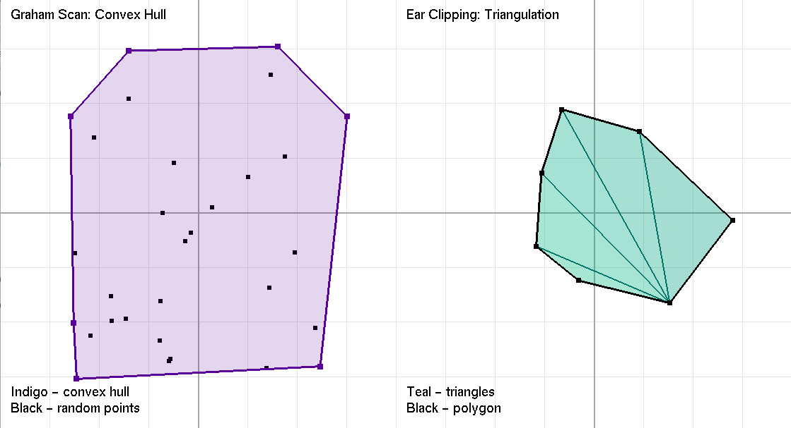

Coursework · Computer graphics
Five OpenGL labs, from a triangle to ear clipping
A university graphics course in five C++ programs. The first three are fixed-pipeline warm-ups; the last two are the ones worth reading — segment intersection by orientation test with Bresenham and Xiaolin Wu rasterization drawn side by side, and a Graham scan hull next to an ear-clipping triangulation.
The warm-ups
Lab 1 is the bootstrap: glutInit, a single-buffered RGB window, glewInit with its return value actually checked, and one GL_TRIANGLES block whose three vertices carry three different colors. The fixed pipeline interpolates them across the face, so the triangle is Gouraud-shaded for free. Forty lines, and the point is that the toolchain links and the context comes up.
Lab 2 adds a modelview matrix and a keyboard: arrow keys translate a triangle, +/- scale, q/e rotate, r resets. The transforms go in as glTranslatef · glRotatef · glScalef inside a glPushMatrix/glPopMatrix pair, in that order, so rotation and scaling stay about the figure's own centre rather than the world origin — swapping the first two calls is the standard way to get this wrong.
Lab 3 is three variants of one animation. The figure is the parametric heart x = 16sin³t, y = 13cos t − 5cos 2t − 2cos 3t − cos 4t, sampled at one-degree steps into a GL_TRIANGLE_FAN. In 3.1 it travels an ellipse; in 3.2 it spins in place; in 3.3 it does both, with space to pause and c to cycle colors. A 16 ms glutTimerFunc drives the phase, tying animation speed to the timer rather than to frame rate.

Lab 4 — intersection without computing the intersection
Two line segments, and the only question asked is whether they meet. The program never solves for the crossing point, which is the whole trick: a point requires a division, and therefore a parallel-case guard and a loss of precision, while the yes/no answer needs neither. Everything rests on one primitive:
int orientation(Point p, Point q, Point r)
{
float v = (q.y - p.y) * (r.x - q.x) - (q.x - p.x) * (r.y - q.y);
if (std::abs(v) < 0.00001f) return 0;
return v > 0 ? 1 : 2;
}That expression is a 2×2 determinant — the z-component of the cross product of q−p and r−q. Its magnitude is twice the area of triangle pqr; only its sign is used, and the sign says which side of the directed line pq the point r falls on. Zero means collinear.
Intersection then follows from a straddle argument: in general position, p₁q₁ and p₂q₂ cross exactly when p₂ and q₂ lie on opposite sides of line p₁q₁ and p₁ and q₁ lie on opposite sides of line p₂q₂. One condition alone is not enough — a short segment can straddle an infinite line while sitting far off the end of the actual segment. Both together pin the crossing inside both segments. In code that is four orientation calls and the test o1 != o2 && o3 != o4.
The four collinear cases are handled separately. When an orientation returns 0 the segments share a line, and the question collapses to whether a point lies between two others on it; onSegment answers with a bounding-box comparison, which would be wrong as a general containment test but is exact under a proven collinearity.
The whole predicate is a handful of multiplications and comparisons: constant time, no division, no special case for vertical or parallel segments.
On floating-point input the 1e-5 epsilon is doing real work — it decides what counts as collinear, and near-degenerate cases land on whichever side of it the arithmetic falls. With integer coordinates the determinant is exact and the epsilon disappears; that is the version you would ship.
Bresenham next to Wu
The same two segment pairs are then rasterized twice, once per column of the window, so the algorithms can be compared on identical input. Intersecting pairs are drawn green, disjoint pairs red, which makes the predicate's answer visible rather than printed.
Bresenham keeps an integer error term err = dx - dy and, at each step, decides from its sign whether to advance x, y, or both. There is no floating point anywhere: only additions, subtractions and comparisons on integers. It emits exactly one fully-lit pixel per step, so the line is crisp and the staircase is visible.
Wu answers a different question — not "which pixel is closest to the line" but "how much of each pixel does the line cover". It walks the major axis keeping a floating-point interY, advances it by gradient = dy/dx each column, and lights the two pixels bracketing it with brightnesses rfpart(interY) and fpart(interY), which sum to 1 so intensity per column is constant. Endpoints get an xGap factor so a line starting mid-pixel does not begin with a full-brightness stub, and steep lines are transposed up front so the loop only handles the shallow case.
What Wu costs: twice the pixel writes, floating-point instead of integer arithmetic, a blend-enabled framebuffer (GL_SRC_ALPHA, GL_ONE_MINUS_SRC_ALPHA), and correctness that now depends on what is already under the line, since partial pixels composite with the background. Both are O(max(dx, dy)); the difference is the constant, not the order.

One honest flaw: putPixel wraps every single pixel in its own glBegin/glEnd pair. At a few thousand pixels in a static scene nobody notices, but it is one draw call per pixel and would be indefensible anywhere real.
Lab 5 — convex hull and triangulation
Two panels in one window, split with glViewport: thirty random points with their hull on the left, a random simple polygon cut into triangles on the right. R regenerates both, which is the useful part — every run is a fresh test case rather than the one input that happened to work.
Graham scan
Pick the pivot — lowest y, leftmost on ties — which is guaranteed to be on the hull. Sort the rest by polar angle about it, using the cross-product sign as the comparator (no atan2) and breaking ties by squared distance. Then walk the sorted list keeping a stack, popping before each push while the last two entries and the candidate do not make a left turn:
while (res.size() >= 2 &&
cross(res[res.size() - 2], res[res.size() - 1], pts[i]) <= 0.0f)
res.pop_back();The <= 0 rather than < 0 also discards collinear points, so the hull comes back with corners only and no redundant vertices along an edge. Complexity is O(n log n), and the sort is the whole of it: each point is pushed once and popped at most once, so the scan itself is amortized O(n).
Ear clipping
The polygon is first normalized to counter-clockwise orientation using the shoelace signed area — every subsequent sign test assumes that convention. Then vertices are removed one at a time, each removal emitting a triangle.
A vertex is an ear when two things hold. First, it is convex: cross(prev, curr, next) > 0 in a counter-clockwise polygon, meaning the triangle cut off there points into the polygon rather than out of it. Second, the triangle (prev, curr, next) is empty — no other vertex lies inside it. Both matter: a convex vertex whose triangle swallows a distant vertex would produce a triangle sticking outside the shape, so isEar tests every remaining vertex against the candidate triangle with three cross-product signs.
That an ear always exists is the two-ears theorem: every simple polygon with more than three vertices has at least two. So the loop terminates, removing one vertex per pass until three remain, giving n − 2 triangles for an n-gon. Cost is O(n) per ear test, O(n) tests per removal, O(n) removals — O(n³) in the naive form written here. For 7–10 vertex polygons that is irrelevant; for a mesh it would not be, and the standard fix is to cache convexity and revalidate only the two neighbours of a removed ear.
There is also a guard counter and an if (!found) break;. Neither should fire on a simple polygon; they exist because the random generator could in principle produce a self-intersecting one, and a lab that hangs inside glutMainLoop is harder to debug than one that draws an incomplete triangulation.

This is coursework: fixed-function OpenGL, single-file programs, no build system beyond a compiler invocation. The algorithms are textbook ones implemented from the definitions rather than called from a library, which was the point of the exercise.